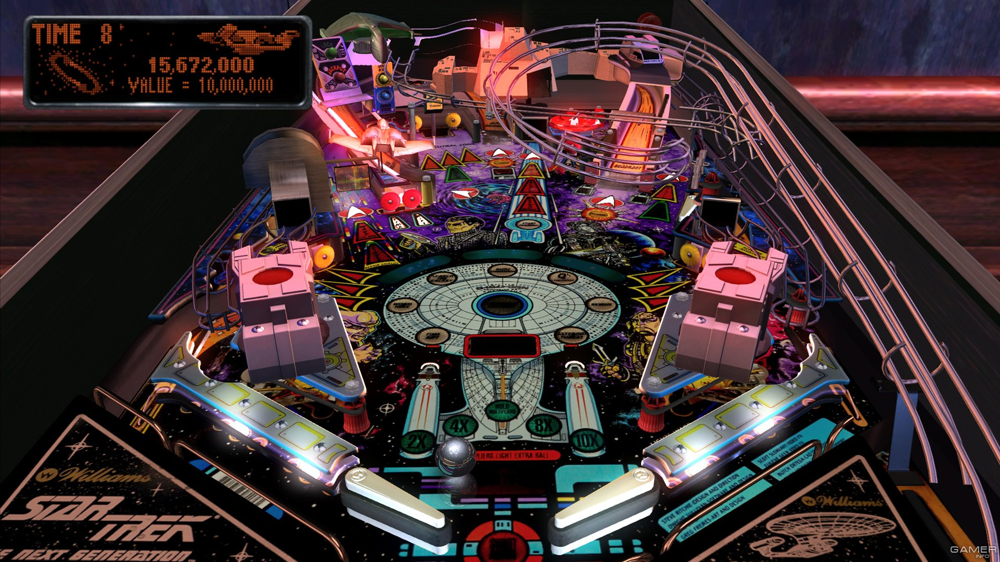
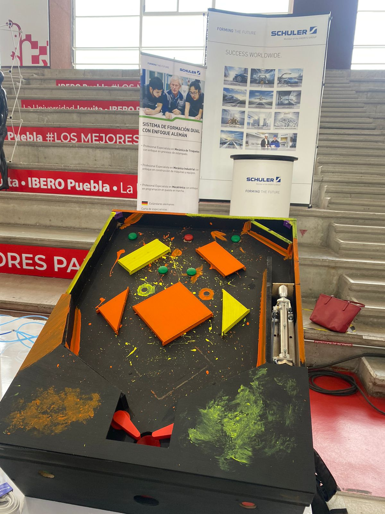

Portafolio de Actividades
Automatización Industrial
Departamento de Ciencias e Ingenierías | Universidad Iberoamericana Puebla, México.
Paula Xunaxi Bernal Sánchez
Resumen:
Hola soy Paula Xunaxi, estudio automotriz, me gustan los carros, mi coche de en sueño es un Mustang rojo y me encanta comer pizza.
Ramón Alberto Romero Salazar
Resumen:
Soy Ramon Alberto Romero Salazar estudiante de ingeniería en comunicaciones y electrónica, en mis tiempo libre me gusta escuchar música todo tipo de música para escapar un poco de la rutina o hacer ejercicio para distraerse de las actividades de la universidad.
Luis Zermeño Escobedo
Resumen:
Soy estudiante de mi último semestre de Ingeniería Mecatrónica. Mis hobbies son el ciclismo y el montañismo.

Grecia Lisseth Moctezuma Baltazar
Resumen:
En mis tiempos libres me gusta prácticar deportes como natación, boxeo y me gusta pintar cuadros.
Reportes de Prácticas:
Práctica 1: Respaso de Electricidad y Armado de circuitos
La práctica busca armar siete circutos simples en los que se aprenda el uso del material y la función de herramientas simples de control como por ejemplo pulsadores y LEDs.
Práctica 2: Tablero eléctrico
Dentro de la práctica se busca armar un tablero que sea funcional para todas las práticas. El tablero tiene que contener todos los elementos para el correcto funcionamiento de las futuras prácticas.
Práctica 3: Electrotecnia Virtual y Presencial
La meta de esta práctica fue completar nueve circuitos, cada uno con un fin diferente y preguntas específicas sobre el tema que trata. Por el otro lado se armaron tres circuitos físicos en los que igualemnte se tenía una meta de diferente en cada circuito.
Práctica 5: Neumática e hidráulica
Dentro de la industria, la mayoría de las máquinas y procesos no son meramente eléctricos o electrónicos. Sino que necesitan de elementos que proporcionen ciertos movimientos, fuerza o un control diferente del que producen los elementos eléctricos (que normalmente al ser motores, es un movimiento rotativo). La neumática y la hidráulica nos permite tener más control sobre los movimientos al provocar naturalemente movimientos lineales.
Práctica 6: Electroneumática
Ya teniendo los movimientos hidráulicos o neumáticos, tenemos que tener elementos de control, estos al venir de señales eléctricas, es mucho más fácil que sean electromecánicos. Por lo que se hace un híbrido de tecnologías para aprovechar cada una al máximo.
Práctica 7: PLC
Facilitando aún más las conecciones, llegan los PLC. Los cuales trabajan con lógica de la misma forma que una computadora para simplemente señalar las salidas que necesitan encenderse o apagarse, dependiendo de las entradas que lee el PLC.
Práctica 8: Sensores industriales
Los sensores serán nuestra principal entrada de datos, esto nos permite estar conscientes de qué parte del proceso se está llevando a cabo o dónde se encuentra el material que se está trabajando. Este es el último elemento necesario para tener un proceso totalmente automatizado.
Proyecto final
Automatización Industrial
Departamento de Ciencias e Ingenierías | Universidad Iberoamericana Puebla, México.
Resumen:
El proyecto busca recrear el juego de Pinball, conocido mundialmente por ser un juego que venía por default en muchos equiopos de cómputo. El juego tiene reglas muy simples; usuario tiene tres botones, el primero inicial el juego y avienta la pelota al tablero. Los dos botones restantes permiten al usuario controlar dos paletas que golpean la pelota para evitar que la misma llegue hasta la parte inferior del tablero. En el juego hay dos elementos que se tienen que tener en cuenta: los puntos y las vidas. Pra hacer puntos hay que tocar los más elementos posibles en la parte superior del tablero. Par no perder vidas se tiene que evitar que la pelota caiga. El juego es simple, pero el mismo tiempo muy entretenido.

Dentro del prcto buscamos aplicar los conocimientos adquiridos en la materia. Por lo que se uso mecánica para la transmisión de movimiento, neumática para la activación de las paletas, electrotecnia para el uso de un motor monofásico y control de PLC para tener conteo de vidas, puntaje y lectura de sensores.
Pruebas de sensores
Prueba de funcionalidad de pistones neumáticos y sensores para que cuando pase la pelota, este marque los puntos o que se perdió una vida.
Juego funcional
En este video podemos ver una de las últimas pruebas en las que ya se puede jugar sin ningún problema, la neumática responde como debería y los sensores marcan correctamente las vidas y los sensores intermedios para marcar los puntos positivos. Se pueden ver ligeros cambios desde las pruebas; se conectó de forma inversa el pistón neumático de efecto doble para que inicie desde su posición contraria, se redujeron las vidas para un juego más rápido y el motor ya tiene una masa desequilibrada (no gira en torno al centro de masa) para que cuando el motor se active todo el tablero vibre, marcando el "GAME OVER".
Proyecto en Expo
Aquí se puede apreciar el proyecto en expuesto en Expo Ibero:

Para más información sobre el proyecto pueden descargar el archivo oficial:
Para descargar haz click aqui